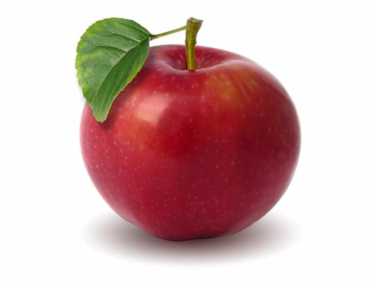

JESTES JABLKIEM
 Jablko to bardzo tradycyjny owoc, ale takze fajny bo mozna zrobic szarlotke
Bardzo mozliwe ze jestes stary lub stara
Prawdopodobnie jestes osoba bardzo mila dla innych, zabawna i przyjemnie sie z toba przebywa
Jednak jablko jest troche nudne
Mimo to nie zmieniaj sie bo gdyby nie istnienie jablek to swiat bylby wybrakowany